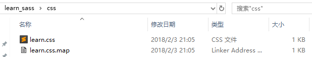

sass学习——koala
- 新建文件夹learn_sass,文件夹下新建文件夹sass，sass文件夹下新建文件learn.scss，将learn_sass添加到koala的工作区，此时learn_sass文件夹下会自动出现css文件夹，

- 此时在learn.scss中添加的任何内容，只要保存了，就会自动编译成learn.css,如果没有自动编译，点击scss文件，勾选选项

- 文件后缀名
sass有两种后缀名文件：一种后缀名为sass，不使用大括号和分号；另一种就是我们这里使用的scss文件，这种和我们平时写的css文件格式差不多，使用大括号和分号。而本教程中所说的所有sass文件都指后缀名为scss的文件。在此也建议使用后缀名为scss的文件，以避免sass后缀名的严格格式要求报错。
//文件后缀名为sass的语法body
background: #eee
font-size:12px
p
background: #0982c1
//文件后缀名为scss的语法
body {
background: #eee;
font-size:12px;
}
p{
background: #0982c1;
}
- 导入
sass导入( @import)，编译时会将 @import的scss文件合并进来只生成一个CSS文件。但是如果你在sass文件中导入css文件如 @import 'reset.css'，那效果跟普通CSS导入样式文件一样，导入的css文件不会合并到编译后的文件中，而是以 @import方式存在。
所有的sass导入文件都可以忽略后缀名 .scss。一般来说基础的文件命名方法以_开头，如 _mixin.scss。这种文件在导入的时候可以不写下划线，可写成 @import "mixin"。
例如：
被导入sass文件a.scss：
//a.scss//-------------------------------body {
background: #eee;
}
需要导入样式的sass文件b.scss：
@import "learn.css";
@import "a";
p{
background: #0982c1;
}
转译出来的b.css样式：

根据上面的代码可以看出，b.scss编译后，learn.css继续保持import的方式，而a.scss则被整合进来了。
- 注释
sass有两种注释方式，一种是标准的css注释方式 /* */，另一种则是 //双斜杆形式的单行注释，不过这种单行注释不会被转译出来。
- 变量
普通变量 定义之后可以在全局范围内使用。
$变量名：变量值；


默认变量 sass的默认变量仅需要在值后面加上 !default即可。


sass的默认变量一般是用来设置默认值，然后根据需求来覆盖的，覆盖的方式也很简单，只需要在默认变量之前重新声明下变量即可


特殊变量
一般我们定义的变量都为属性值，可直接使用，但是如果变量作为属性或在某些特殊情况下等，则必须要以 #{$variables}形式使用。


多值变量
多值变量分为list类型和map类型，简单来说list类型有点像js中的数组，而map类型有点像js中的对象。list
list数据可通过空格，逗号或小括号分隔多个值，可用 nth($var,$index)取值。关于list数据操作还有很多其他函数如length($list)， join($list1,$list2,[$separator])， append($list,$value,[$separator])等，具体可参考 sass Functions（搜索 List Functions即可）定义//一维数据$px: 5px 10px 20px 30px;//二维数据，相当于js中的二维数组$px: 5px 10px, 20px 30px;$px: (5px 10px) (20px 30px);使用


map
map数据以key和value成对出现，其中value又可以是list。格式为： $map: (key1: value1, key2: value2, key3: value3);。可通过 map-get($map,$key)取值。关于map数据还有很多其他函数如 map-merge($map1,$map2)， map-keys($map)， map-values($map)等，具体可参考 sass Functions（搜索 Map Functions即可）定义$heading: (h1: 2em, h2: 1.5em, h3: 1.2em);使用


全局变量
在变量值后面加上 !global即为全局变量。这个目前还用不上，不过将会在sass 3.4后的版本中正式应用。目前的sass变量范围饱受诟病，所以才有了这个全局变量。目前变量机制在选择器中声明的变量会覆盖外面全局声明的变量。(这也就人们常说的sass没有局部变量)测试结果显示是有局部变量的。


- 嵌套
sass的嵌套包括两种：一种是选择器的嵌套；另一种是属性的嵌套。我们一般说起或用到的都是选择器的嵌套。选择器嵌套
所谓选择器嵌套指的是在一个选择器中嵌套另一个选择器来实现继承，从而增强了sass文件的结构性和可读性。在选择器嵌套中，可以使用 &表示父元素选择器属性嵌套
所谓属性嵌套指的是有些属性拥有同一个开始单词，如border-width，border-color都是以border开头。拿个官网的实例看下：


- @at-root
sass3.3.0中新增的功能，用来跳出选择器嵌套的。默认所有的嵌套，继承所有上级选择器，但有了这个就可以跳出所有上级选择器。普通跳出嵌套却不能跳出@media，@support嵌套@at-root (without: ...)和 @at-root (with: ...)默认 @at-root只会跳出选择器嵌套，而不能跳出 @media或 @support，如果要跳出这两种，则需使用 @at-root (without: media)， @at-root (without: support)。这个语法的关键词有四个： all（表示所有）， rule（表示常规css），media（表示media）， support（表示support，因为 @support目前还无法广泛使用，所以在此不表）。我们默认的 @at-root其实就是 @at-root (without:rule)。@at-root与 &配合使用应用于@keyframe


- 混合（mixin）
sass中使用 @mixin声明混合，可以传递参数，参数名以$符号开始，多个参数以逗号分开，也可以给参数设置默认值。声明的@mixin通过 @include来调用。无参数mixin有参数mixin多个参数mixin调用时可直接传入值，如 @include传入参数的个数小于 @mixin定义参数的个数，则按照顺序表示，后面不足的使用默认值，如不足的没有默认值则报错。除此之外还可以选择性的传入参数，使用参数名与值同时传入。多组值参数mixin如果一个参数可以有多组值，如box-shadow、transition等，那么参数则需要在变量后加三个点表示，如 $variables...@content
@content在sass3.2.0中引入，可以用来解决css3的@media等带来的问题。它可以使 @mixin接受一整块样式，接受的样式从@content开始。PS： @mixin通过 @include调用后解析出来的样式是以拷贝形式存在的，而下面的继承则是以联合声明的方式存在的，所以从3.2.0版本以后，建议传递参数的用 @mixin，而非传递参数类的使用下面的继承 %。


- 继承
sass中，选择器继承可以让选择器继承另一个选择器的所有样式，并联合声明。使用选择器的继承，要使用关键词 @extend，后面紧跟需要继承的选择器。占位选择器 %
从sass 3.2.0以后就可以定义占位选择器 %。这种选择器的优势在于：如果不调用则不会有任何多余的css文件，避免了以前在一些基础的文件中预定义了很多基础的样式，然后实际应用中不管是否使用了 @extend去继承相应的样式，都会解析出来所有的样式。占位选择器以 %标识定义，通过 @extend调用。如上代码，定义了两个占位选择器 %ir和 %clearfix，其中 %clearfix这个没有调用，所以解析出来的css样式也就没有clearfix部分。占位选择器的出现，使css文件更加简练可控，没有多余。所以可以用其定义一些基础的样式文件，然后根据需要调用产生相应的css。ps：在 @media中暂时不能 @extend @media外的代码片段，以后将会可以。


- 函数
sass定义了很多函数可供使用，当然你也可以自己定义函数，以@fuction开始。sass的官方函数链接为： sass fuction，实际项目中我们使用最多的应该是颜色函数，而颜色函数中又以lighten减淡和darken加深为最，其调用方法为lighten($color,$amount)和 darken($color,$amount)，它们的第一个参数都是颜色值，第二个参数都是百分比。关于 @mixin， %， @function更多说明可参阅：


- 运算
sass具有运算的特性，可以对数值型的Value(如：数字、颜色、变量等)进行加减乘除四则运算。请注意运算符前后请留一个空格，不然会出错。$baseFontSize: 14px !default;$baseLineHeight: 1.5 !default;$baseGap: $baseFontSize * $baseLineHeight !default;$halfBaseGap: $baseGap / 2 !default;$samllFontSize: $baseFontSize - 2px !default;//grid$_columns: 12 !default; // Total number of columns$_column-width: 60px !default; // Width of a single column$_gutter: 20px !default; // Width of the gutter$_gridsystem-width: $_columns * ($_column-width + $_gutter); //grid system width
- 条件判断及循环
@if判断
@if可一个条件单独使用，也可以和 @else结合多条件使用三目判断
语法为： if($condition, $if_true, $if_false) 。三个参数分别表示：条件，条件为真的值，条件为假的值。if(true, 1px, 2px) => 1pxif(false, 1px, 2px) => 2pxfor循环
for循环有两种形式，分别为： @for $var from <start> through <end>和 @for $var from <start> to <end>。$i表示变量，start表示起始值，end表示结束值，这两个的区别是关键字through表示包括end这个数，而to则不包括end这个数。@each循环
语法为： @each $var in <list or map>。其中 $var表示变量，而list和map表示list类型数据和map类型数据。sass 3.3.0新加入了多字段循环和map数据循环。单个字段list数据循环多个字段list数据循环多个字段map数据循环